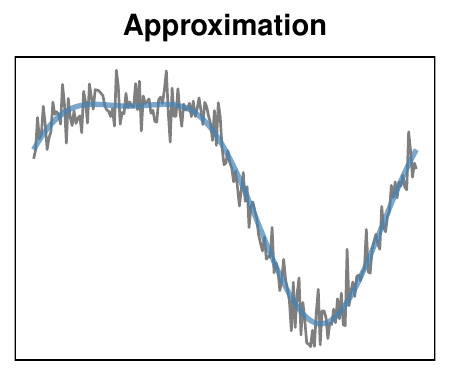
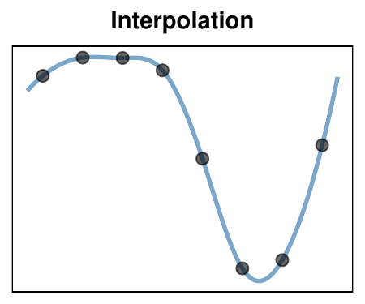
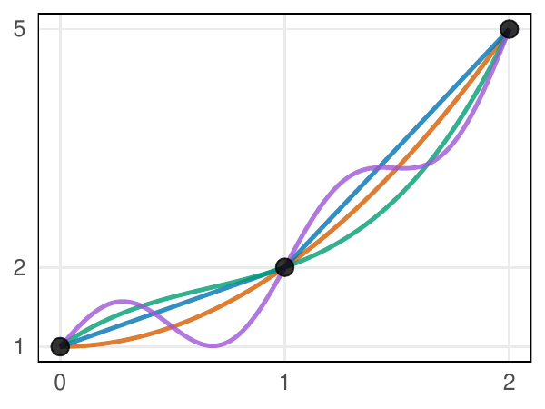
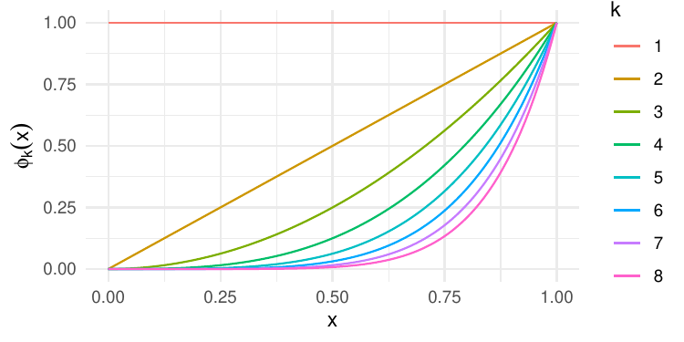
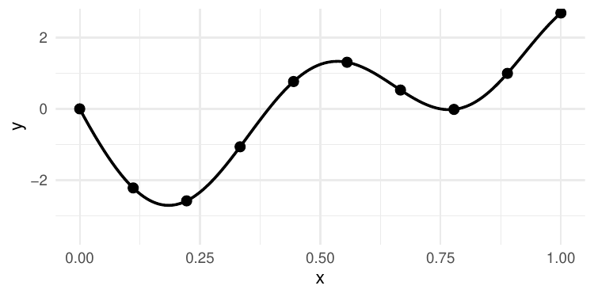
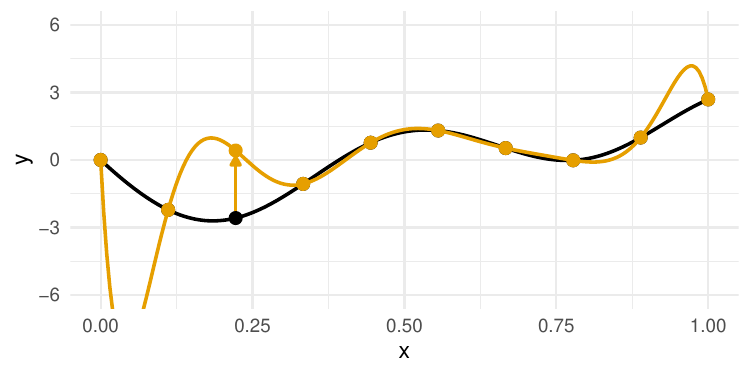
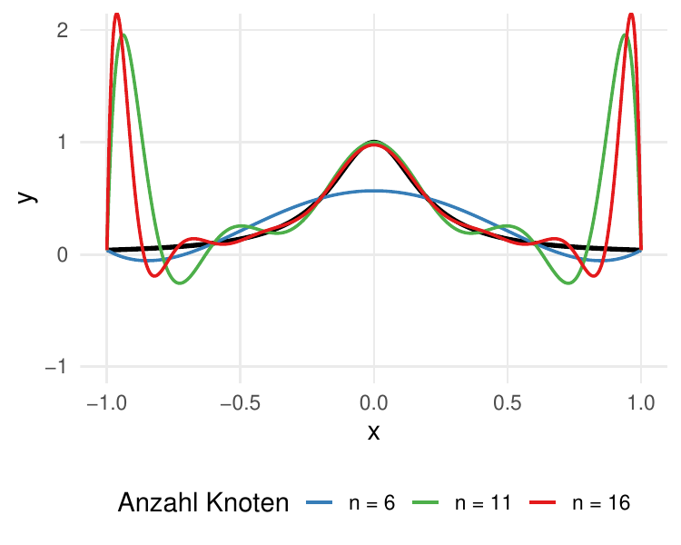
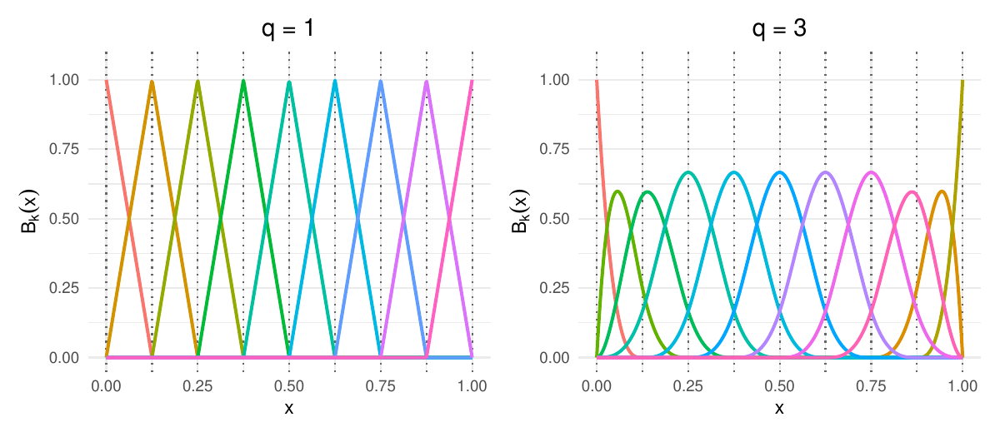
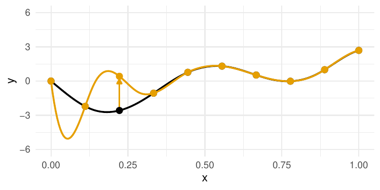

Funktionsapproximation:
Interpolation & Splines*
Fortgeschrittene mathematische Methoden in der Statistik
fabian.scheipl@lmu.de)Material: Thomas Nagler
LMU München
Opener-Quiz
\[ \definecolor{fmmgreen}{RGB}{0,158,115} \definecolor{fmmblue}{RGB}{0,114,178} \definecolor{fmmred}{RGB}{213,94,0} \definecolor{fmmorange}{RGB}{230,159,0} \definecolor{fmmpurple}{RGB}{158,87,213} \newcommand{\ind}{\unicode{x1D7D9}} \newcommand{\R}{{\mathbb{R}}} \newcommand{\N}{{\mathbb{N}}} \newcommand{\Q}{{\mathbb{Q}}} \newcommand{\C}{\mathbb{C}} \newcommand{\P}{\mathbb{P}} \newcommand{\Z}{{\mathbb{Z}}} \newcommand{\E}{{\mathbb{E}}} \newcommand{\K}{{\mathbb{K}}} \newcommand{\L}{\mathbb{L}} \newcommand{\F}{{\mathbb{F}}} \newcommand{\G}{\mathbb{G}} \newcommand{\S}{\mathbb{S}} \newcommand{\D}{{\mathbb{D}}} \newcommand{\bnull}{{\boldsymbol{0}}} \newcommand{\bzero}{{\boldsymbol{0}}} \newcommand{\ba}{{\boldsymbol{a}}} \newcommand{\bb}{{\boldsymbol{b}}} \newcommand{\bc}{{\boldsymbol{c}}} \newcommand{\bd}{{\boldsymbol{d}}} \newcommand{\be}{{\boldsymbol{e}}} \newcommand{\bg}{{\boldsymbol{g}}} \newcommand{\bh}{{\boldsymbol{h}}} \newcommand{\bi}{{\boldsymbol{i}}} \newcommand{\bj}{{\boldsymbol{j}}} \newcommand{\bk}{{\boldsymbol{k}}} \newcommand{\bl}{{\boldsymbol{l}}} \newcommand{\bn}{{\boldsymbol{n}}} \newcommand{\bo}{{\boldsymbol{o}}} \newcommand{\bp}{{\boldsymbol{p}}} \newcommand{\bq}{{\boldsymbol{q}}} \newcommand{\br}{{\boldsymbol{r}}} \newcommand{\bs}{{\boldsymbol{s}}} \newcommand{\bt}{{\boldsymbol{t}}} \newcommand{\bu}{{\boldsymbol{u}}} \newcommand{\bv}{{\boldsymbol{v}}} \newcommand{\bw}{{\boldsymbol{w}}} \newcommand{\bx}{{\boldsymbol{x}}} \newcommand{\by}{{\boldsymbol{y}}} \newcommand{\bz}{{\boldsymbol{z}}} \newcommand{\bA}{{\boldsymbol{A}}} \newcommand{\bB}{{\boldsymbol{B}}} \newcommand{\bC}{{\boldsymbol{C}}} \newcommand{\bD}{{\boldsymbol{D}}} \newcommand{\bE}{{\boldsymbol{E}}} \newcommand{\bF}{{\boldsymbol{F}}} \newcommand{\bG}{{\boldsymbol{G}}} \newcommand{\bH}{{\boldsymbol{H}}} \newcommand{\bI}{{\boldsymbol{I}}} \newcommand{\bJ}{{\boldsymbol{J}}} \newcommand{\bK}{{\boldsymbol{K}}} \newcommand{\bL}{{\boldsymbol{L}}} \newcommand{\bM}{{\boldsymbol{M}}} \newcommand{\bN}{{\boldsymbol{N}}} \newcommand{\bO}{{\boldsymbol{O}}} \newcommand{\bP}{{\boldsymbol{P}}} \newcommand{\bQ}{{\boldsymbol{Q}}} \newcommand{\bR}{{\boldsymbol{R}}} \newcommand{\bS}{{\boldsymbol{S}}} \newcommand{\bT}{{\boldsymbol{T}}} \newcommand{\bU}{{\boldsymbol{U}}} \newcommand{\bV}{{\boldsymbol{V}}} \newcommand{\bW}{{\boldsymbol{W}}} \newcommand{\bX}{{\boldsymbol{X}}} \newcommand{\bY}{{\boldsymbol{Y}}} \newcommand{\bZ}{{\boldsymbol{Z}}} \newcommand{\tagqed}{\tag*{$\blacksquare$}} \newcommand{\Acal}{{\mathcal{A}}} \newcommand{\Bcal}{{\mathcal{B}}} \newcommand{\Ccal}{{\mathcal{C}}} \newcommand{\Dcal}{{\mathcal{D}}} \newcommand{\Ecal}{{\mathcal{E}}} \newcommand{\Fcal}{{\mathcal{F}}} \newcommand{\Gcal}{{\mathcal{G}}} \newcommand{\Hcal}{{\mathcal{H}}} \newcommand{\Ical}{{\mathcal{I}}} \newcommand{\Jcal}{{\mathcal{J}}} \newcommand{\Kcal}{{\mathcal{K}}} \newcommand{\Lcal}{{\mathcal{L}}} \newcommand{\Mcal}{{\mathcal{M}}} \newcommand{\Ncal}{{\mathcal{N}}} \newcommand{\Ocal}{{\mathcal{O}}} \newcommand{\Pcal}{{\mathcal{P}}} \newcommand{\Qcal}{{\mathcal{Q}}} \newcommand{\Rcal}{{\mathcal{R}}} \newcommand{\Scal}{{\mathcal{S}}} \newcommand{\Tcal}{{\mathcal{T}}} \newcommand{\Ucal}{{\mathcal{U}}} \newcommand{\Vcal}{{\mathcal{V}}} \newcommand{\Wcal}{{\mathcal{W}}} \newcommand{\Xcal}{{\mathcal{X}}} \newcommand{\Ycal}{{\mathcal{Y}}} \newcommand{\Zcal}{{\mathcal{Z}}} \newcommand{\eps}{{\varepsilon}} \newcommand{\beps}{{\boldsymbol{\epsilon}}} \newcommand{\balpha}{{\boldsymbol{\alpha}}} \newcommand{\bbeta}{{\boldsymbol{\beta}}} \newcommand{\bchi}{{\boldsymbol{\chi}}} \newcommand{\bdelta}{{\boldsymbol{\delta}}} \newcommand{\bDelta}{{\boldsymbol{\Delta}}} \newcommand{\bepsilon}{{\boldsymbol{\epsilon}}} \newcommand{\bphi}{{\boldsymbol{\phi}}} \newcommand{\bgamma}{{\boldsymbol{\gamma}}} \newcommand{\betah}{{\boldsymbol{\eta}}} \newcommand{\btheta}{{\boldsymbol{\theta}}} \newcommand{\biota}{{\boldsymbol{\iota}}} \newcommand{\bkappa}{{\boldsymbol{\kappa}}} \newcommand{\blambda}{{\boldsymbol{\lambda}}} \newcommand{\bLambda}{{\boldsymbol{\Lambda}}} \newcommand{\bmu}{{\boldsymbol{\mu}}} \newcommand{\bnu}{{\boldsymbol{\nu}}} \newcommand{\bomikron}{{\boldsymbol{\omicron}}} \newcommand{\bpi}{{\boldsymbol{\pi}}} \newcommand{\bSigma}{{\boldsymbol{\Sigma}}} \newcommand{\bxi}{{\boldsymbol{\xi}}} \newcommand{\bzeta}{{\boldsymbol{\zeta}}} \newcommand{\bomega}{{\boldsymbol{\omega}}} \newcommand{\equivto}{{\Leftrightarrow}} \newcommand{\quequiv}{{\quad \equivto \quad}} \newcommand{\impl}{{\implies}} \newcommand{\quimpl}{{\quad \implies \quad}} \newcommand{\implby}{{\impliedby}} \newcommand{\notimplies}{\not\implies} \newcommand{\tr}{{\operatorname{tr}}} \newcommand{\spann}{{\operatorname{span}}} \newcommand{\col}{{\operatorname{col}}} \newcommand{\rang}{{\operatorname{rang}}} \newcommand{\diag}{{\operatorname{diag}}} \newcommand{\vec}{\operatorname{vec}} \newcommand{\pinv}{{^{+}}} \newcommand{\kron}{\mathbin{\otimes_{\mathrm{K}}}} \newcommand{\sign}{{\operatorname{sign}}} \newcommand{\la}{{\langle}} \newcommand{\ra}{{\rangle}} \newcommand{\inner}[1]{{\langle #1 \rangle}} \newcommand{\proj}{{\operatorname{proj}}} \newcommand{\bar}{\overline} \newcommand{\vol}{{\operatorname{vol}}} \newcommand{\dx}{{\, \mathrm{d}x}} \newcommand{\ol}{{\overline}} \newcommand{\argmax}{\mathop{\mathrm{arg\,max}}} \newcommand{\argmin}{\mathop{\mathrm{arg\,min}}} \newcommand{\conv}{\mathop{\mathrm{conv}}} \newcommand{\epi}{\mathop{\mathrm{epi}}} \newcommand{\interior}{\mathop{\mathrm{int}}} \newcommand{\Pr}{\mathbb{P}} \newcommand{\var}{{\mathbb{V}\mathrm{ar}}} \newcommand{\bias}{{\operatorname{bias}}} \newcommand{\abias}{{\mathrm{ABias}}} \newcommand{\AMSE}{{\mathrm{AMSE}}} \newcommand{\AMISE}{{\mathrm{AMISE}}} \newcommand{\cov}{{\mathbb{C}\mathrm{ov}}} \newcommand{\corr}{{\mathrm{Corr}}} \newcommand{\ov}{{\overline}} \newcommand{\wh}[1]{{\widehat{#1}}} \newcommand{\wt}[1]{{\widetilde{#1}}} \newcommand{\tod}{{\stackrel{d}{\to}}} \newcommand{\sumin}{{\sum_{i = 1}^n}} \newcommand{\sumjn}{{\sum_{j = 1}^n}} \newcommand{\KL}{{\operatorname{KL}}} \newcommand{\softmax}{{\operatorname{SoftMax}}} \newcommand{\layernorm}{{\operatorname{LayerNorm}}} \newcommand{\avg}{{\operatorname{avg}}} \newcommand{\relu}{{\operatorname{ReLu}}} \newcommand{\VC}{{\operatorname{VC}}} \newcommand{\indep}{{\perp \!\!\! \perp}} \newcommand{\unif}{{\operatorname{Unif}}} \newcommand{\bern}{{\operatorname{Bernoulli}}} \newcommand{\binomial}{{\operatorname{Binomial}}} \newcommand{\MSE}{{\operatorname{MSE}}} \newcommand{\iid}{\textit{iid}\;} \newcommand{\IF}{{\operatorname{IF} }} \newcommand{\BIC}{{\operatorname{BIC}}} \newcommand{\AIC}{{\operatorname{AIC}}} \newcommand{\IC}{{\operatorname{IC}}} \newcommand{\expl}[1]{{\tag*{[#1]}}} \newcommand{\cb}[1]{\textbf{#1}} \newcommand{\cbgreen}[1]{\textcolor{fmmgreen}{\textbf{#1}}} \newcommand{\cbred}[1]{\textcolor{fmmred}{\textbf{#1}}} \newcommand{\cbpurp}[1]{\textcolor{fmmpurple}{\textbf{#1}}} \newcommand{\cborange}[1]{\textcolor{fmmorange}{\textbf{#1}}} \newcommand{\corange}[1]{{\textcolor{fmmorange}{#1}}} \newcommand{\cblue}[1]{{\textcolor{fmmblue}{#1}}} \newcommand{\cgreen}[1]{{\textcolor{fmmgreen}{#1}}} \newcommand{\cred}[1]{{\textcolor{fmmred}{#1}}} \newcommand{\cpurp}[1]{{\textcolor{fmmpurple}{#1}}} \newcommand{\symbf}[1]{\boldsymbol{#1}} \]
Opener-Quiz
Beim Reinkommen: QR-Code scannen und die 2 Einstiegsfragen beantworten.
Frage 1:
Sei \(\bv_1, \dots, \bv_d\) eine Basis eines Vektorraums \(V\). Welche Aussagen sind wahr?
- Jedes \(\bv \in V\) hat eine eindeutige Darstellung \(\bv = \sum_{j=1}^d \alpha_j \bv_j\).
- Basisvektoren dürfen linear abhängig sein, solange sie \(V\) aufspannen.
- Die Anzahl \(d\) der Basisvektoren ist die Dimension von \(V\).
Frage 2:
Die Menge aller Funktionen \(f\colon [a, b] \to \R\) bildet mit punktweiser Addition und Skalarmultiplikation einen Vektorraum. Welche Dimension hat er?
- \(2\) (Intervallgrenzen \(a\) und \(b\))
- \(n\) (Anzahl der Datenpunkte)
- endlich, aber sehr groß
- Er ist unendlich-dimensional.
Verwendete Vorkenntnisse
- Lineare Algebra:
- Lineare Gleichungssysteme \(\bB \ba = \by\) und deren Lösbarkeit
- Konditionszahl einer Matrix als Maß für numerische Stabilität
- Basen und lineare Unabhängigkeit (Basisdarstellung von Funktionen)
- Analysis:
- Polynome und ihre Ableitungen (Polynomgrad, Monomialbasis)
- Stetigkeit und Differenzierbarkeit
- Stückweise definierte Funktionen
- Normen (z.B. \(\|\cdot\|_\infty\) für Konvergenzaussagen)
Einführung
Einführung
Drei Varianten: Finde \(\wh{f}\), so dass …

\[\|f - \cblue{\wh{f}}\| \approx 0 \phantom{\quad \forall i}\]

\[f(x_i) = \cblue{\wh{f}(x_i)} \quad \forall i\]

\[y_i = \cblue{\wh{f}(x_i)} + \eps_i \quad \forall i\]
Bei der Interpolation sind die Daten rauschfrei, d.h. \(y_i = f(x_i)\) — deshalb steht dort später auch \(y_i = \wh{f}(x_i)\).
Frage:
Wie sind die drei Varianten miteinander verwandt?
Kommentare
Das Approximationsproblem lösen wir meist, indem wir es in ein Interpolations- oder Glättungsproblem überführen.
Glättung ist die “schwierigste” Variante, weil die Fehler \(\eps_i\) meist stochastisch sind.
Wir kümmern uns zunächst um Interpolation.
Wichtige Anwendungen:
- Glatte Kurven zeichnen.
- \(f\) approximativ, aber schneller auswerten.
- Beispiel: \(f(x) =\int_0^x g(y) dy\) oder \(f(x) = g^{-1}(x)\) müssen numerisch bestimmt werden.
- Ableitungen oder Integrale von \(f\) approximieren.
Anwendungen in ML und Data Science
- Computergrafik:
Interpolation von Pixelwerten bei Reformatierung/Rotation von Bildern. - Zeitreihen:
Auffüllen fehlender Werte in Sensor- oder Finanzdaten. - Generative Modelle:
Latent Space-Interpolation in VAEs/GANs - NLP:
Positional Encodings in Transformern (“RoPE”) basieren auf Sinus-/Cosinus-Funktionen; Long-Context-Erweiterungen von RoPE interpolieren bzw. skalieren Positionsindizes.
(teils Interpolation im engeren Sinn, teils verwandte Konzepte/Analogien)
Quiz: Interpolationsproblem
Problem:
Finde \(\wh{f}\), so dass \[y_i = \wh{f}(x_i), \quad i = 1, \dots, n.\]
Welche der folgenden Aussagen ist wahr?
- Es gibt unendlich viele Funktionen \(\wh{f}\), die das Problem lösen.
- Aus \(y_i = \wh{f}(x_i), i = 1, \dots, n\), folgt \(\|f - \wh{f}\| \approx 0\).
- Das Problem hat eine eindeutige Lösung, wenn alle \(x_i\) verschieden sind.
Unendlich viele Lösungen: Beispiel
Betrachte \(n = 3\) Punkte: \((0, 1), (1, 2), (2, 5)\).
Einige Interpolanten:
- Parabel: \(\cred{\wh{f}_1(x)} = 1 + x^2\)
- Stückweise linear: \(\cblue{\wh{f}_2(x)} = \begin{cases} x + 1 & x < 1 \\ 3x - 1 & x \geq 1 \end{cases}\)
- Kubisch: \(\cgreen{\wh{f}_3(x)} = x^3 - 2x^2 + 2x + 1\)
- Vogelwild: \(\cpurp{\wh{f}_4(x)} = 1 + x^2 + 0.5\sin(2\pi x)\)

Alle erfüllen \(\wh{f}(x_i) = y_i\), aber sehen völlig unterschiedlich aus!
Allgemein:
Jedes \(\wh{f} = \wh{f}_1 + g\) mit \(g(x_i) = 0\) für alle \(i\) ist ebenfalls ein Interpolant.
\(\impl\) Wir brauchen Basissysteme (Polynome, Splines), die die Lösungsmenge auf bestimmte Funktionenräume einschränken.
Funktionenräume und ihre Basen
Funktionenräume
- Menge aller Funktionen \(f\colon [a,b] \to \R\) ist ein Vektorraum:
- Addition: \((f + g)(x) = f(x) + g(x)\)
- Skalarmultiplikation: \((\alpha \cdot f)(x) = \alpha \cdot f(x)\)
- Dieser Raum ist unendlich-dimensional \(\implies \; \exists\) unendlich viele Interpolanten für \(n\) gegebene Punkte!
Lösung:
Einschränkung auf endlichdimensionale Unterräume
- Wähle linear unabhängige Basisfunktionen \(\phi_1, \dots, \phi_K\) und betrachte nur \[\mathcal{F}_K = \left\{ f \;:\; f(x) = \sum_{k=1}^K a_k \phi_k(x), \; a_1, \dots, a_K \in \R \right\}\]
- Jedes \(f \in \mathcal{F}_K\) ist durch \(K\) Koeffizienten \((a_1, \dots, a_K)\) eindeutig bestimmt —
dafür ist die lineare Unabhängigkeit wesentlich: für \(\phi_1 = 1, \phi_2 = x, \phi_3 = 1 + x\) wäre \(K = 3\), aber \(\dim \mathcal{F}_K = 2\). - Beispiele:
- Polynome vom Grad \(\le n-1\): \(\phi_k(x) = x^{k-1}\), \(K = n\)
- Splines \(q\)-ten Grades auf \(m+1\) Knoten: \(K = m + q\)
Basen: von \(\R^n\) zu Funktionenräumen
\(\{\phi_1, \dots, \phi_K\}\) ist eine Basis von \(\mathcal{F}_K\) — genauso wie \(\{\bv_1, \dots, \bv_n\}\) eine Basis des \(\R^n\) ist:
| Vektorraum \(\R^n\) | Funktionenraum \(\mathcal{F}_K\) | |
|---|---|---|
| “Vektor” | \(\bv \in \R^n\) | Funktion \(f\colon [a,b] \to \R\) |
| Basis | \(\bv_1, \dots, \bv_n\) | \(\phi_1, \dots, \phi_K\) |
| eindeutige Darstellung | \(\bv = \sum_{i=1}^n \alpha_i \bv_i\) | \(f = \sum_{k=1}^K a_k \phi_k\) |
| Koordinaten | \((\alpha_1, \dots, \alpha_n)\) | Koeffizienten \((a_1, \dots, a_K)\) |
| Dimension | \(n\) | \(K\) |
- Alle Konzepte der linearen Algebra (lineare Unabhängigkeit, Span, Basiswechsel, …) übertragen sich direkt auf Funktionen — eine Funktion ist ein Vektor (in \(\R^\infty\)…)
- Statt eine Funktion (in \(\R^\infty\)) finden zu müssen, brauchen wir jetzt nur noch ihren Koordinatenvektor \(\ba = (a_1, \dots, a_K) \in \R^K\)
\(\to\) ein Problem der (numerischen) linearen Algebra!
Interpolation durch Basisdarstellung
Interpolation durch Basisdarstellung
- Problem:
Finde \(\wh{f}\), so dass \[y_i = \wh{f}(x_i) \quad \forall i.\] - Lösung:
- Nehme an, dass \(\wh{f}(x) = \sum_{k = 1}^K a_k \phi_k(x)\) für
- Basisfunktionen \(\phi_1, \dots, \phi_K\) (bekannt)
- Basiskoeffizienten \(a_1, \dots, a_K\) (unbekannt)
- Löse das Gleichungssystem \[\begin{align*} y_i & = \sum_{k = 1}^K a_k \phi_k(x_i), \qquad i = 1, \dots, n. \end{align*}\]
\(\to\) Interpolationsproblem zurückgeführt auf Lineares Gleichungssystem!
- Interpolationsmethoden unterscheiden sich im Wesentlichen durch die Wahl des Basissystems —
gute Systeme haben gute Kondition, Stabilität, Lokalität, effiziente Lösbarkeit.
Quiz: Vom Interpolationsproblem zum LGS
Das System \[\begin{align*} y_i & = \sum_{k = 1}^K a_k \phi_k(x_i), \qquad i = 1, \dots, n \end{align*}\] lässt sich als LGS \(\bB \ba = \by\) darstellen. Was sind \(\bB, \ba, \by\)?
Beispiel: Basisdarstellung konkret
Gegeben:
\(n = 3\) Datenpunkte \((0, 1), (1, 2), (2, 5)\), Monomialbasis \(\phi_k(x) = x^{k-1}\), \(K = 3\)
\[\implies \bB = \begin{pmatrix} 1 & 0 & 0 \\ 1 & 1 & 1 \\ 1 & 2 & 4 \end{pmatrix}, \quad \by = \begin{pmatrix} 1 \\ 2 \\ 5 \end{pmatrix}\]
Lösung durch Einsetzen:
\[\begin{align*}
\text{Zeile 1: }&& a_1 &= 1 &&\\
\text{Zeile 2: }&& \cblue{a_2} + \cgreen{a_3} &= 1 &&\to \cblue{a_2} &=&\; 1 - \cgreen{a_3}\\
\text{Zeile 3: }&& 2\cblue{a_2} + 4\cgreen{a_3} &= 4 &&\to 2 + 2\cgreen{a_3} &=&\; 4\\
\end{align*}\] \(\impl a_3 = 1, a_2 = 0\) \(\impl\) \(\wh{f}(x) = 1 + x^2\)
Probe:
\(\wh{f}(0) = 1\), \(\wh{f}(1) = 2\), \(\wh{f}(2) = 5 \qquad \checkmark\)
Polynominterpolation
Fundamentalsatz der Algebra
Satz: Fundamentalsatz der Algebra
Jedes Polynom \[p(x) = a_n x^n + \ldots + a_1 x + a_0\] mit \(a_n \neq 0\) und \(n \geq 1\) hat mindestens eine Nullstelle in \(\C\).
Äquivalent:
Jedes Polynom vom Grad \(n\) hat genau \(n\) Nullstellen in \(\C\) (mit Vielfachheit gezählt).
Folgerung:
Ein Polynom vom Grad \(\leq n-1\) mit \(n\) verschiedenen Nullstellen ist das Nullpolynom.
Beispiel:
Ein quadratisches Polynom (Grad 2) kann höchstens 2 (verschiedene) Nullstellen haben. Finden wir eines mit 3 Nullstellen, muss es \(p(x) = 0\) für alle \(x\) sein.
Eindeutigkeit der Polynominterpolation
Satz: Polynominterpolation
Für \(n\) Paare \((x_i, y_i)_{i = 1}^n\) mit paarweise verschiedenen \(x_i\) gibt es genau ein Polynom \(p\) vom Grad höchstens \((n-1)\) mit \(p(x_i) = y_i\) für alle \(i\).
Beweisskizze (Eindeutigkeit):
- Angenommen, \(p\) und \(q\) sind beides interpolierende Polynome vom Grad \(\leq n-1\).
- Dann gilt: \(\cgreen{(p - q)}(x_i) = p(x_i) - q(x_i) = y_i - y_i = 0\) für alle \(i = 1, \ldots, n\).
- Also hat \(\cgreen{p - q}\) mindestens \(n\) Nullstellen, aber Grad \(\leq n-1\).
- Nach dem Fundamentalsatz: \(\cgreen{p - q}\) muss das Nullpolynom sein.
- Daher \(p = q\). \(\blacksquare\)
Polynominterpolation
- Alle Polynome vom Grad höchstens \((n-1)\) können durch die Monomialbasis \[\phi_1(x) = 1, \quad \phi_2(x) = x, \quad \dots, \quad \phi_{n}(x) = x^{n-1}\] erzeugt werden.

Achtung: Häufiges Missverständnis
Es gibt genau ein Polynom von Grad höchstens \(n-1\) durch \(n\) Punkte.
NICHT: Grad genau \(n-1\)!
Beispiel: \(n = 3\) Punkte \((0,0), (1,1), (2,2)\) liegen auf einer Geraden.
- Interpolierendes Polynom: \(p(x) = x\) (Grad 1, nicht 2!)
- Das eindeutige Polynom höchstens 2. Grades ist: \(p(x) = \corange{0} \cdot x^2 + 1 \cdot x + 0\)
Polynominterpolation in R

Problem 1: Kondition
- Monomialbasis führt zu einer schlecht konditionierten Basismatrix \(\bB\): \[\bx = (x_1, \dots, x_n)^\top \to \bB = \begin{pmatrix} 1 & \bx & \bx^2 & \dots & \bx^{n-1}\end{pmatrix}\]
- Die Spalten sind die Vektoren \(\bb_k = (x_1^{k - 1}, \dots, x_n^{k - 1})^\top\).
- Für \(k\) groß sind diese Vektoren nahezu linear abhängig (vgl. Abbildung der Monomialbasis!)
\(\implies\) Matrix nahezu singulär / schlecht konditioniert.
Numerisches Beispiel:
\(n\) äquidistante Punkte in \([0, 1]\), Polynom vom Grad \(n-1\):
| \(n\) | Polynomgrad | \(\kappa(\bB)\) |
|---|---|---|
| 5 | 4 | \(\approx 10^{3}\) |
| 10 | 9 | \(\approx 10^{7}\) |
| 15 | 14 | \(\approx 10^{12}\) |
| 20 | 19 | \(\approx 10^{16}\) |
(Größenordnungen für \(\kappa_2\); andere Normen ergeben sehr ähnliche Werte.
Die Kondition hängt zudem von der Knotenlage ab: dieselben Punkte auf \([-1, 1]\) ergeben für \(n = 20\) nur \(\kappa_2 \approx 10^{8}\).)
Bei doppelter Präzision (\(\approx 16\) Dezimalstellen) ist für \(n \ge 20\) fast alle Genauigkeit verloren!
\(\to\) verwende orthogonalisierte Basis (Legendre-, Chebyshev-, Hermite-Polynome) —
in R: cbind(1, poly(x, 3)) statt cbind(1, x, x^2, x^3)
Orthogonale Polynome: Gram-Schmidt im Funktionenraum
- Auf \(\mathcal{F}_K\) gibt es auch ein Skalarprodukt: \(\displaystyle \langle f, g \rangle = \int f(x)\, g(x) \, dx \qquad\) (analog zu \(\bx^\top \by\) in \(\R^n\))
- Damit funktioniert Gram-Schmidt-Orthogonalisierung (\(\to\) QR-Zerlegung!) angewendet auf die Monome \(\{1, x, x^2, \dots\}\) über \([-1, 1]\):
\[ p_2(x) = \cgreen{x^2} - \cblue{\frac{\langle x^2, 1 \rangle}{\langle 1, 1 \rangle} \cdot 1} - \cred{\underbrace{\frac{\langle x^2, x \rangle}{\langle x, x \rangle}}_{=\,0} \cdot\, x} = \cgreen{x^2} - \cblue{\tfrac{1}{3}} \;\propto\; \underbrace{\tfrac{1}{2}\left(3x^2 - 1\right)}_{\text{Legendre-Polynom } P_2} \]
- Legendre-, Chebyshev-, Hermite-Polynome = Gram-Schmidt bzgl. unterschiedlicher Skalarprodukte (Gewichtsfunktionen/Intervalle)
- orthogonale Basisfunktionen \(\impl\) \(\bB\) deutlich besser konditioniert.
poly(x, k)inRorthogonalisiert bzgl. des diskreten (vektoriellen) Skalarprodukts \(\sum_i f(x_i) g(x_i)\).
Problem 2: Stabilität und Lokalität

- Ändern wir nur ein \(y_i\), verändert sich (potentiell) die gesamte Funktion. \(\implies\) Die Methode ist instabil.
- Dies ist ein grundsätzliches Problem von Polynombasen.
Das Runge-Phänomen
Runge-Phänomen (1901):
Interpoliere \(f(x) = \frac{1}{1 + 25x^2}\) auf \([-1, 1]\) mit \(n\) äquidistanten Knoten durch \(p_{n-1}\) (Grad \(n - 1\)).
- \(f\) ist glatt (\(\in \mathcal C^\infty\)!)
- Aber: \(\|f - p_{n-1}\|_\infty \to \infty\) für \(n \to \infty\)!
- Das Wachstum ist nicht monoton (von \(n = 5\) auf \(n = 10\) fällt der Fehler zunächst); die Fehlermaxima wandern an den Rand.

Lösung:
Stückweise Polynome statt eines globalen Polynoms \(\to\) Splines
Splines
Splines
Def.: Polynom-Spline
Sei \([a, b] \subset \R\) ein Intervall.
Ein Polynom-Spline \(q\)-ten Grades ist eine Funktion \(s\colon [a, b] \to \R\),
- definiert auf einem Gitter von Knoten \[a = \xi_0 < \xi_1 < \ldots < \xi_{m} = b,\]
- so dass \[s(x) = p_k(x) \quad \text{für } x \in [\xi_{k -1}, \xi_k) \quad (\text{bzw. } x \in [\xi_{m-1}, \xi_m] \text{ für } k = m)\] mit Polynomen \(p_k\) vom Grad höchstens \(q\), \(k = 1, \dots, m\),
- mit \((q - 1)\) stetigen Ableitungen: \(s \in \mathcal C^{q-1}\).
Splines
Weniger formal:
Ein Spline ist eine Funktion, die Polynome an den Punkten \(\xi_1, \dots, \xi_{m - 1}\) zusammensetzt.


Warum \(m + q\) Parameter?
Annahme: einfache innere Knoten, maximale Glattheit \(\mathcal C^{q-1}\)
Parameterzählung:
- Ohne Stetigkeitsbedingungen: \(m(q+1)\) Parameter (\(m\) Intervalle, je \(q+1\) Koeffizienten)
- An jedem der \((m-1)\) inneren Knoten: \(q\) Bedingungen (Stetigkeit von \(s, s', \dots, s^{(q-1)}\))
- \(\implies m(q+1) - (m-1) \cdot q = \corange{m + q}\)
Interpolation an \(n = m + 1\) Knoten mit kubischem Spline (\(q = 3\)):
\(m + 3\) Freiheitsgrade aber nur \(n = m + 1\) Interpolationsbedingungen
\(\impl\) Es fehlen 2 Bedingungen!
Gängige Randbedingungen:
| Typ | Bedingung |
|---|---|
| Natürlich | \(s''(a) = s''(b) = 0\) (lineare Enden) |
| Eingespannt | \(s'(a), s'(b)\) vorgegeben |
| Periodisch | \(s'(a) = s'(b),\; s''(a) = s''(b)\) (für \(y_0 = y_m\)) |
Natürliche Splines sind der Standard, wenn keine Randinformation vorliegt.
Kubischer Spline: Konstruktion Schritt für Schritt
Gegeben:
4 Punkte \((0, 0), (1, 1), (2, 0), (3, -1)\) \(\impl\) \(m = 3\) Intervalle
Ansatz:
Je Intervall ein kubisches Polynom \(p_k(x)\) mit 4 Koeffizienten.
Bedingungen:
| Typ | Anzahl | Beispiel |
|---|---|---|
| Interpolation | \(\cgreen{4}\) | \(p_1(\xi_0) = y_0,\; p_k(\xi_k) = y_k\) |
| Stetigkeit | \(\cgreen{2}\) | \(p_1(1)=p_2(1)\) |
| \(s'\) stetig | \(\cgreen{2}\) | \(p_1'(1)=p_2'(1)\) |
| \(s''\) stetig | \(\cgreen{2}\) | \(p_1''(1)=p_2''(1)\) |
| Randbedingung (natürlich) | \(\cgreen{2}\) | \(s''(0)=s''(3)=0\) |
Summe: \(\cgreen{4 + 2 + 2 + 2 + 2 = 12}\) Bedingungen für \(\cblue{3 \times 4 = 12}\) Unbekannte
\(\impl\) LGS ist eindeutig lösbar!
B-Splines
- Jeder Spline von Grad \(q\) kann auch durch eine Linearkombination von \(m + q\) B-Spline-Basisfunktionen \(B_{k}\) zum Grad \(q\) repräsentiert werden: \[\begin{align*} s(x) = \sum_{k = 1}^{m + q} a_k B_{k}(x) \end{align*}\]

B-Splines: Rekursive Definition
- B-Splines können auf verschiedene Arten definiert werden.
- Rekursive Definition (Cox-de-Boor-Rekursion; nur zur Referenz/Transparenz):
- Erweitere die Knotenfolge zu \(\tau_1, \dots, \tau_{m + 2q + 1}\): \[\tau_1 = \cdots = \tau_{q + 1} = \xi_0, \quad \tau_{q + 1 + i} = \xi_{i} \;\; (i = 1, \dots, m - 1), \quad \tau_{m + q + 1} = \cdots = \tau_{m + 2q + 1} = \xi_m.\]
- \(q = 0\): \[B_k^{(0)}(x) = \ind(\tau_k \le x < \tau_{k + 1})\]
- \(q > 0\): \[\displaystyle B_k^{(q)}(x) = \frac{x - \tau_{k}}{\tau_{k + q} - \tau_{k}} B_k^{(q - 1)}(x) + \frac{\tau_{k + q + 1} - x}{\tau_{k + q + 1} - \tau_{k + 1}} B_{k + 1}^{(q - 1)}(x)\]
- in
R:splines::bs()
B-Splines in R
B-Splines: Numerische Stabilität & Effizienz
Vergleich der Konditionszahlen für \(n = 20\) Punkte in \([0,1]\):
| Basis | Polynomgrad | Konditionszahl |
|---|---|---|
| Monomialbasis | 19 | \(\kappa\left(\bB_{\text{mono}}\right) \approx 10^{16}\) |
| B-Splines (kubisch, \(K = 20\) Basisfunktionen) | 3 | \(\kappa\left(\bB_{\text{spline}}\right) \approx 10^{2}\) |
B-Splines sind rund 14 Größenordnungen besser konditioniert!
(Größenordnungen, hier \(\kappa_2\) mit den Standardknoten von splines::bs(): \(1{,}2 \cdot 10^{16}\) vs. \(35\); die genauen Werte hängen von Norm und Knotenwahl ab.)
Außerdem: Dünn besetzte Bandstruktur (nur \(q+1\) Einträge pro Zeile) der B-Spline-Matrix ermöglicht
- LGS-Lösung in \(O(nq^2)\) statt \(O(n^3)\)
- Für \(n = 1000\), \(q = 3\): Beschleunigungsfaktor \(\approx 100\,000\)
\(\impl\) B-Splines sind der Standard in der Praxis, trotz komplizierter Definition.
(B-)Splines: Eigenschaften
- Splines sind das gängigste Basissystem zur Funktionsapproximation, meist kubisch (\(q = 3\)):
- Wenn \(\max_k\left|\xi_k - \xi_{k - 1}\right|\) hinreichend klein ist, kann jede stetige Funktion \(f\) beliebig genau approximiert werden.
- Die Ableitung eines Grad-\(q\)-Splines ist ein Grad-\((q - 1)\)-Spline, das Integral ein Grad-\((q + 1)\)-Spline.
- Ableitungen/Integrale eines Splines approximieren auch die Ableitungen/Integrale der Zielfunktion — für die Ableitungen allerdings nur, wenn \(f\) selbst entsprechend oft differenzierbar ist, und mit je einer Ordnung langsamerer Konvergenz.
- B-Splines sind numerisch stabil (vgl. B-Splines: Numerische Stabilität & Effizienz);
haben lokale Träger: \(B_k(x) = 0\) für \(x \notin [\tau_k, \tau_{k + q + 1}]\) \(\impl\) Approximation ist lokal, also stabiler;
\(\bB\) hat Band-Struktur \(\impl\) effizient lösbar.

Polynominterpolation (links) vs. Spline-Interpolation (rechts): Änderung eines Datenpunkts.
Self-Check & Zusammenfassung
Wrap-up
Heute gelernt
- Approximation, Interpolation, Glättung
- Funktionenräume: Funktionen als Vektoren, Basisfunktionen wie Basisvektoren
- Lösungsansatz durch Basisdarstellung: Interpolation \(\to\) LGS \(\bB\ba = \by\)
- Polynombasen und ihre Probleme (Kondition, Runge-Phänomen); Ausweg: orthogonale Polynome = Gram-Schmidt im Funktionenraum
- Splines, B-Splines und ihre Vorteile (Lokalität, Stabilität, Effizienz)
Nächste Vorlesung: Funktionsapproximation II — Glättungsproblem, Bias-Varianz-Trade-off
Self-Check
Frage 1: Zur Charakterisierung eines Splines \(q\)-ten Grades auf \(m + 1\) Knoten benötigen wir…
- \(q + 1\) Parameter.
- \(m(q + 1)\) Parameter.
- \(m + q\) Parameter.
Frage 2: Ein kubischer Spline auf dem Knotengitter \(\xi_0 < \xi_1 < \dots < \xi_5\) (6 Knoten). Wie viele Basiskoeffizienten hat er?
- 6
- 8
- 9
- 24
Frage 3: Warum verwendet man in der Praxis B-Splines statt der Monomialbasis? (mehrere Antworten möglich)
- Die B-Spline-Basismatrix ist deutlich besser konditioniert.
- Nur B-Splines können jede stetige Funktion beliebig genau approximieren.
- Lokale Träger \(\to\) Bandstruktur \(\to\) effiziente Lösung des LGS.
- Mit der Monomialbasis hat das Interpolationsproblem keine eindeutige Lösung.
Ausblick: Weiterführende Themen
Weiterführende Themen & Vorlesungen:
- Mehrdimensionale Interpolation: Tensor-Produkt-Splines, radiale Basisfunktionen
- Glättung mit Regularisierung: P-Splines, Generalisierte Additive Modelle (\(\to\) Statistik V: Konzepte Statistischer Modellierung)
- Moderne ML-Anwendungen: Spline-basierte Aktivierungsfunktionen (KANs), Normalizing Flows